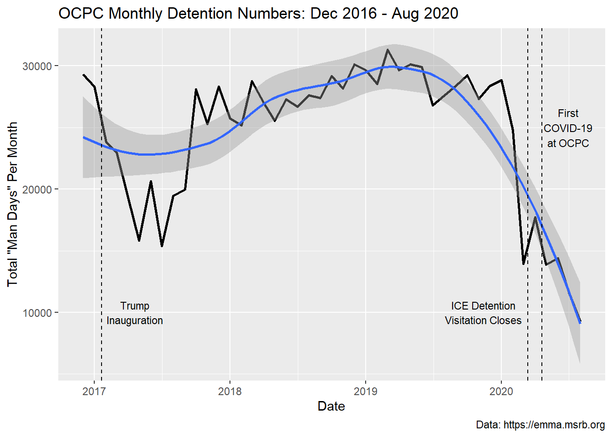

OCPC Monthly Detained Population Dec 2016-Aug 2020
This post contains some information on monthly detained population as gleaned from EMMA filings.
Getting accurate information on ICE detention numbers is challenging. During the COVID-19 pandemic, ICE began releasing national detention numbers on a semi-regular basis, and I work to track and graph those trends. Over the past few years, ICE began releasing year end detention reports that include monthly national summaries and annual summaries for individual detention facilities. Still, at the individual facility level it can be very difficult to obtain detention numbers beyond the annual average daily population summaries that are released in year end reports.
Method
Recently, going through documents in the Electronic Municipal Market Access (EMMA), which reports bond related information, I discovered that for facilities established through revenue bonds, the financial disclosure statements may contain more fine grained data on detention populations.
State level inspection of public records laws may be another method to obtain finer grained data worth pursuing.
The graph below is the first public image depicting monthly level detention numbers for the Otero County Processing Center (OCPC). The monthly detained population was gathered from the aforementioned revenue disclosure reports on EMMA and assembled into a table, which is hosted in a GitHub repository. Hopefully others may find review of EMMA filings useful for reconstructing more fine grained ICE detention information.

Interpretation
Unfortunately, the data are still rather restricted in time and only span a single administration so it is not yet possible to track inter-administration policy impacts on detention. However, there are some very interesting trends to consider. At OCPC, detention numbers were declining before the beginning of the Trump administration and that trend continued for the first six months of his term. Notably, at the national level, immigration detention numbers were rising in the final years of the Obama administration and continued through 2020 at the start of the pandemic COVID-19 pandemic. Despite the overall national trend of increasing detention numbers, interestingly, detention numbers were decreasing at OCPC during the early months of the Trump administration. In October 2017 detention numbers at OCPC began to increase again. From that point, at OCPC detention numbers rose gradually over the next two years until the early months of 2020 just before the start of the pandemic.
As a regular visitor to OCPC, I recall speaking with detained persons in early 2020 and them telling me that there were few people in the facility. Though I was never able to determine why the facility was emptying out, many of us in the region suspected that ICE detention facilities along the border were being emptied in the event that the Migrant Protection Protocols (MPP) or Remain in Mexico policy would be over turned in the 9th Circuit. The thought was that ICE was creating bed space for a large influx of people who would be admitted when MPP was overturned. Unfortunately, MPP was not overturned remained in place until it was ended through Executive Order by Biden. However, it is clear that OCPC was starting to empty out months before the pandemic began in the US.
Due to the COVID-19 pandemic, ICE visitation closed on March 13, 2020. After this date, through data obtained via EMMA one can see that detention numbers began to rise again at OCPC. It appears that, other than June 2020 when there was a slight uptick, detention numbers at OCPC have been falling since the first case of COVID-19 at the facility on April 20, 2020. At present, detention numbers nationally are rising in the early months of the Biden administration but do not appear to be rising at OCPC. However, I believe that OCPC is among the facilities that negotiated a guaranteed minimum deal with the Trump administration so MTC continues to make money on Ghost Beds.